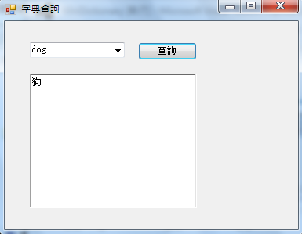

C# 視窗程式：簡介
視窗與 C# 程式
本書所採用的視窗技術，是較舊型的 Windows Forms 技術，而非新型的 WPF 技術，雖然這種技術較為傳統，但是卻比較容易學習，對初學者而言是比較好上手的。
要學習 C# 的視窗程式設計，只看程式碼往往是不夠的，因為程式碼沒有辦法傳達有關視覺化介面設計過程的實況訊息。因此、最好搭配教學影片同時學習。筆者在金門大學上課的時候，幾乎都有用 CamStudio 將上課過程進行螢幕錄影，讀者可以一邊觀看這些上課錄影，一邊參考本書的程式碼進行學習，以下是這些錄影在 YouTube 上的網址。
| 主題 | 教學影片 |
|---|---|
| C# 視窗程式設計簡介 1 | http://youtu.be/MtCx-T71_bg |
| C# 視窗程式設計簡介 2 | http://youtu.be/_9rEEWE3lXQ |
| C# 視窗控制項巡禮 | http://youtu.be/e5366D_ngAA |
| C# 文字型計算機 | http://youtu.be/A1KVnrfVF7k |
| C# 實作字典查詢程式 | http://youtu.be/yS3G-H_hrFU |
| C# Array 與 List 物件的使用 | http://youtu.be/EHSGtKpRprI |
| C# HashTable 與 Dictionary 物件的使用 | http://youtu.be/hYH-npRmmKM |
| C# 將小字典擴充為小翻譯系統 | http://youtu.be/_sFsTo41PXs |
| C# Timer 與碼錶 | http://youtu.be/UA0rizekLow |
| C# Timer 與小時鐘 | http://youtu.be/NJ6B5-vO_88 |
| C# Timer 與移動球 | http://youtu.be/6Gs4MPzt6q4 |
| C# 檔案處理 | http://youtu.be/3EyPcAddd70 |
| C# 文字編輯器 1 | http://youtu.be/xymT54El53E |
| C# 文字編輯器 2 | http://youtu.be/xz5sKvZjLZI |
| C# 畫圖功能示範 | http://youtu.be/8aAql8R4WSg |
| C# 小畫板 (2) | http://youtu.be/HkOkWRQ_Ad4 |
| C# 小畫板 (3) | http://youtu.be/VXaQu_yYu08 |
| C# 瀏覽器控制 1/3 | http://youtu.be/CIwYabPN7qA |
| C# 瀏覽器控制 2/3 | http://youtu.be/sJ6cfuL3-ZA |
| C# 瀏覽器控制 3/3 | http://youtu.be/YThlDxk-E7U |
| C# DataGridView 元件的使用 | http://youtu.be/XzsZRqLAi30 |
| C# 製作賣紅茶的 POS 系統 | http://youtu.be/XX0wHhvkkiE |
讀者可以先看「C# 視窗程式設計簡介1, 2 與 C# 視窗控制項巡禮」等三部影片，並且操作一次，有了基本概念之後，就可以繼續下看下列的內容了。
按鈕測試
專案下載：https://dl.dropbox.com/u/101584453/cs/code/ButtonTest.zip
using System;
using System.Collections.Generic;
using System.ComponentModel;
using System.Data;
using System.Drawing;
using System.Linq;
using System.Text;
using System.Windows.Forms;
namespace ButtonTest
{
public partial class Form1 : Form
{
public Form1()
{
InitializeComponent();
}
private void button1_Click(object sender, EventArgs e)
{
label1.Text = "你好！";
textBox1.Text = "我很好！";
}
}
}文字型計算機
教學錄影：C# 文字型計算機 -- http://youtu.be/A1KVnrfVF7k 專案下載：https://dl.dropbox.com/u/101584453/cs/code/TextCalculator.zip
using System;
using System.Collections.Generic;
using System.ComponentModel;
using System.Data;
using System.Drawing;
using System.Linq;
using System.Text;
using System.Windows.Forms;
namespace TextCalculator
{
public partial class Form1 : Form
{
public Form1()
{
InitializeComponent();
}
private void buttonEqual_Click(object sender, EventArgs e)
{
try
{
double number1 = Double.Parse(textBoxNumber1.Text);
double number2 = Double.Parse(textBoxNumber2.Text);
string op = comboBoxOp.Text;
double result = 0.0;
// MessageBox.Show(number1 + op + number2 + "=");
switch (op)
{
case "+": result = number1 + number2; break;
case "-": result = number1 - number2; break;
case "*": result = number1 * number2; break;
case "/": result = number1 / number2; break;
default: throw new Exception("op=" + op + ":Error!");
}
textBoxResult.Text = result.ToString();
}
catch (Exception exception)
{
MessageBox.Show(exception.ToString());
}
}
}
}小字典
教學錄影：
- C# 實作字典查詢程式 -- http://youtu.be/yS3G-H_hrFU
- C# Array 與 List 物件的使用 -- http://youtu.be/EHSGtKpRprI
- C# HashTable 與 Dictionary 物件的使用 -- http://youtu.be/hYH-npRmmKM
- C# 將小字典擴充為小翻譯系統 -- http://youtu.be/_sFsTo41PXs
專案下載： https://dl.dropbox.com/u/101584453/cs/code/WinDictionary.zip
執行畫面：

小字典執行畫面
介面設計

小字典介面設計
using System;
using System.Collections.Generic;
using System.ComponentModel;
using System.Data;
using System.Drawing;
using System.Linq;
using System.Text;
using System.Windows.Forms;
namespace WindowsFormsApplication1
{
public partial class FormDictionary : Form
{
Dictionary<String, String> dict = new Dictionary<string, string>();
public FormDictionary()
{
InitializeComponent();
}
private void buttonQuery_Click(object sender, EventArgs e)
{
try
{
String eword = comboBoxQuery.Text;
String cword = dict[eword];
richTextBox.Text = cword;
}
catch
{
MessageBox.Show("輸入錯誤，查不到！");
}
}
private void FormDictionary_Load(object sender, EventArgs e)
{
String[] eWords = new String[] { "dog", "cat", "eat", "chase", "run", "a", "the" };
String[] cWords = new String[] { "狗", "貓", "吃", "追", "跑", "一隻", "這隻" };
for (int i = 0; i < eWords.Length; i++)
{
dict.Add(eWords[i], cWords[i]);
}
}
}
}